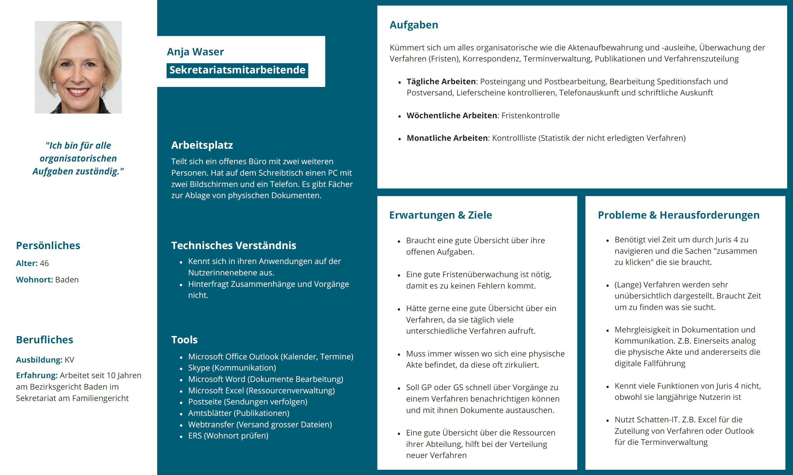
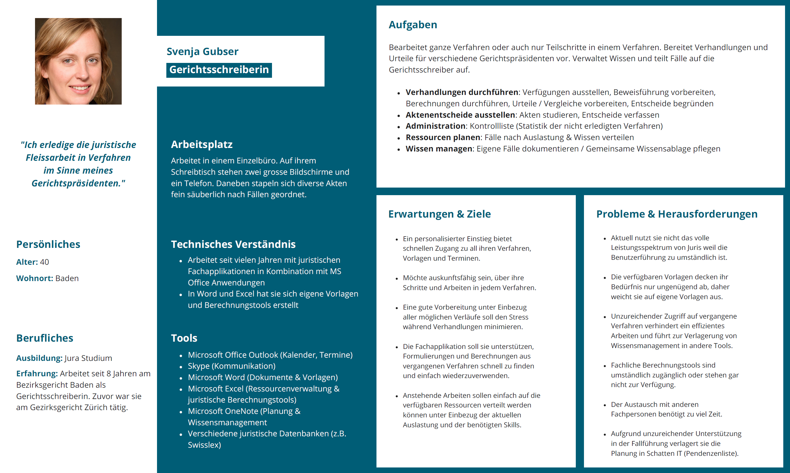
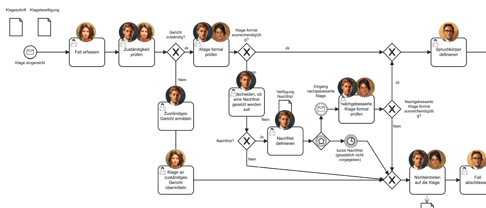
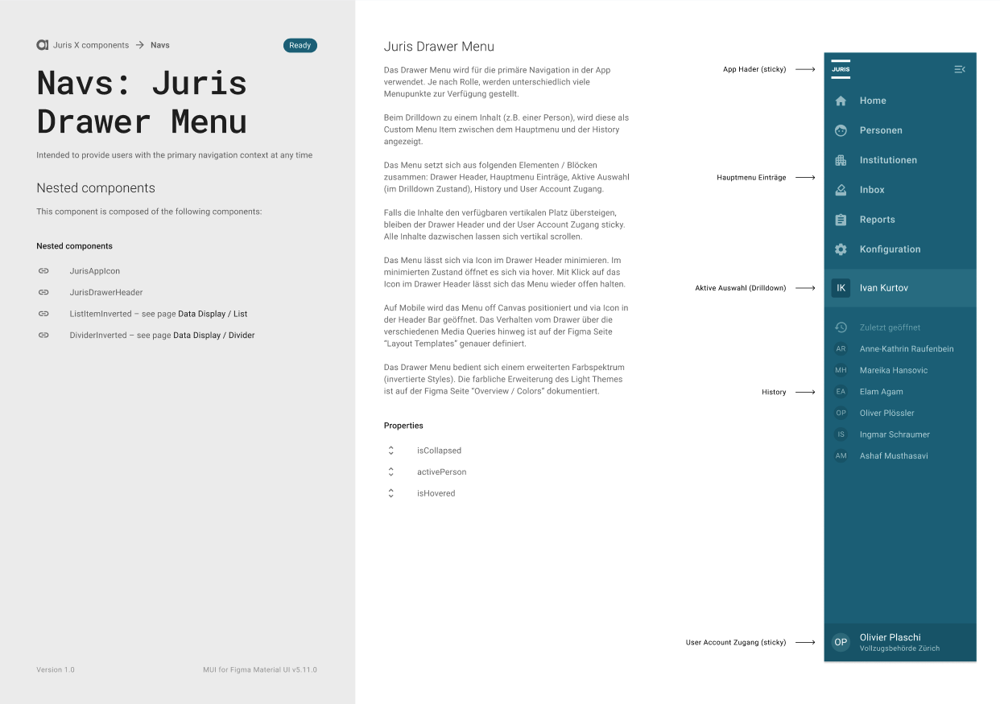
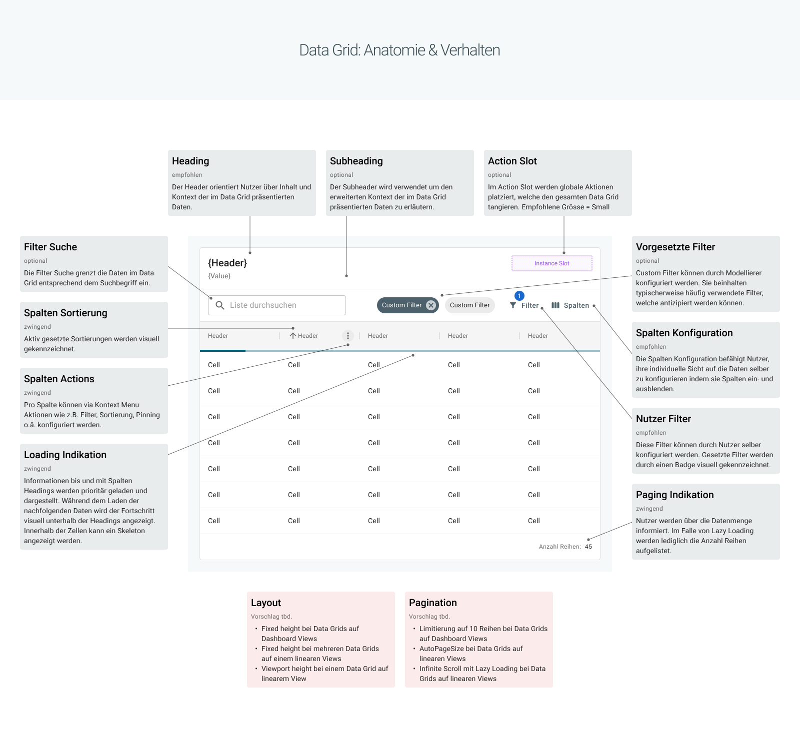

JURIS
2022-2023UCD, UX-Research, UX-Design, Design System (Material UI)
Background
As a UX designer at Abraxas Informatik AG, I contributed to the development of JURIS. The specialized application JURIS enables legal organizations to fully digitize and manage their work processes, covering the domains of law enforcement, judiciary, and corrections.
UX-Research
In collaboration with product owners, requirements engineers, and business analysts, we conducted various workshops and context analyses with subject matter experts and end users, both on-site and remotely. The evaluated results were translated into personas, user journeys, and problem scenarios. From the analysis of the usage context, we were able to derive and validate usage requirements.
Depicted are examples from the judiciary domain. On one hand, there are the personas of the secretariat staff and court clerk, and on the other hand, a current user-journey (Zivilgericht 1. Instanz, Ordentliches Verfahren).
  Ideation
In ideation workshops with various representatives (UX, RE, BA, Product Owner, developers, etc.), we generated ideas using different creativity techniques to develop solutions for the defined problems and requirements.
In the example shown, ideas for creating a new procedural step were gathered in the domain of jurisprudence using the Design Studio method.

Design System
For the JURIS application, we developed a product-specific design system in Figma based on Material UI. This was supplemented with specific custom components, consisting of elements from MUI (atomic design).
The images show two custom components: the Drawer Menu and the Data Grid.
 Prototype
We iteratively transformed the selected ideas from the ideation into tangible low- and high-fidelity prototypes using Figma, based on our design system. This allowed us to validate them with domain experts and users, and provided the developers with a clear visual guide for implementation.
The following video is a high-fidelity prototype from the domain of jurisprudence. The screen flow demonstrates the happy path, starting from the homepage, navigating through the list of procedures to a specific procedure, and creating a new procedural step within that procedure.